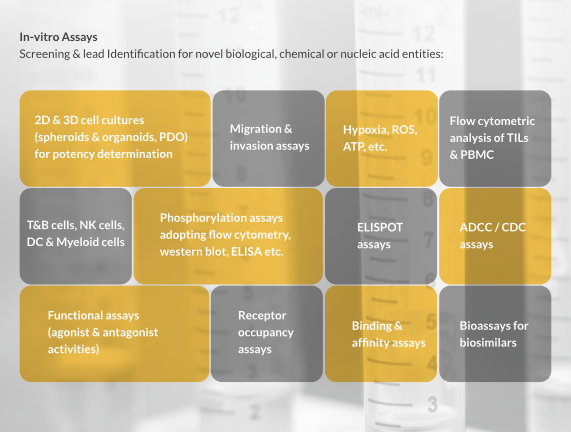
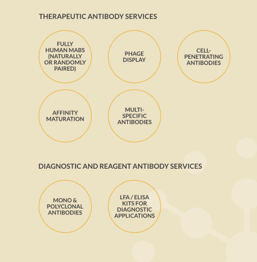
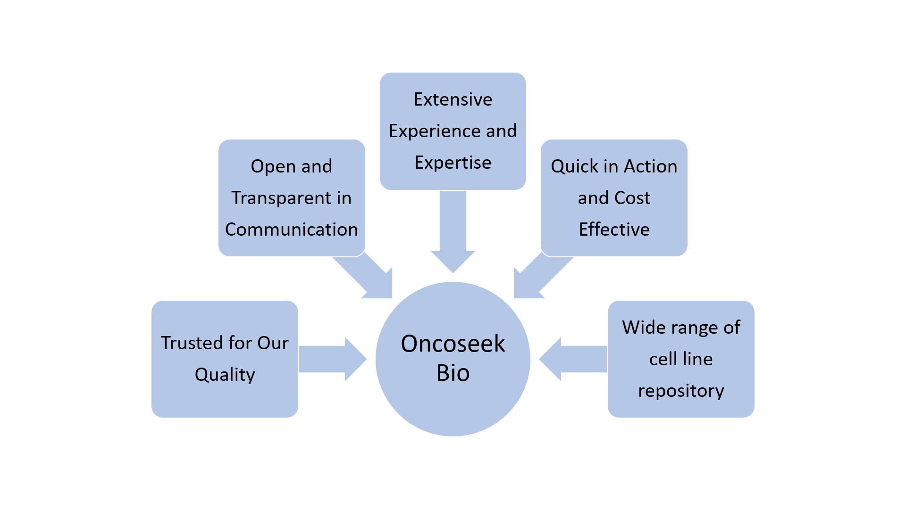

Choose from our portfolio of standardized and characterized assays or discuss your individual needs with our in-house experts.

Our Drug Discovery Services Portfolio:
Choose from our portfolio of standardized and characterized assays or discuss your individual needs with our in-house experts.
- Concept to Clinic
- In vitro Services
- Recombinant Proteins
- Antibody Discovery
- Mechanism of Action Studies
- Pre clinical studies
Concept to Clinic
Our Scientists and program managers are supported by state of the art infrastructure which enables them to design and conduct studies meticulously such that the journey from concept to clinics is rapid, qualitative, and rewarding to our customers and collaborators while meeting the needs of their patients.
Therapeutic Selection
- Competitive intelligence
- Market evaluation
- Feasibility report
Target Product Profile (6-9 months)
- Selection of target
- Identification of binders and their functionality
- Lead optimization
PoC Studies (6-12 months)
- Pharmacology
- PK/PD
- nGLP TOX in rodents and cyno
GLP & IND (12-18 months)
- RCB
- GLP Tox studies
- IND enabling studies
Clinical trials*
(Indication driven)
Phases 1,2,3,&4
*Clinical material supplies only
In vitro Services
We provide target- specific binding as well as functional assays that produce qualitative and reproducible experimental data.

Screening Assays
- Ligand-receptor binding
- Competitive binding
- Affinity determination
In vitro cell-based screening assays
Two-dimensional (2D) assays, Three-dimensional(3D) assays which help to determine:
- Potency
- Functionality
- Receptor occupancy
- Physiological responses
- Cell migrations
- Cell invasions
In addition to standard assays, we offer specialised or customised in vitro assays wherein the effects of mono and drug combinations are studied in standard cell lines or primary cells.
Disease-in-a-dish Models
- NASH/NAFLD drug screening services
- OLV screening services
We developed our in house in vitro 2D and 3D Non-alcoholic steatohepatitis and Non-alcoholic fatty liver disease models. We offer drug testing services on our in vitro 2D monolayer and 3D Spheroid and Organoids NASH/NAFLD Models in a 96-well Assay format.
Oncolytic virus is a virus that preferentially infects and kills cancer cells. We developed 2D monolayer and 3D Spheroid Organoid models for Screening OLVs.
TGFß Induced Fibrosis Model
Anti-fibrotic drug activity measurement in spheroids, biomarkers assays
Live/Dead Cell Double Staining in 2D and 3D formats
Calcein-AM only stains viable cells whereas Propidium Iodine stains only dead cells.
Live/Dead/Total Cell Triple Staining in 2D and 3D formats
The Cell Viability Imaging three-color assay can be used with 2D and 3D cell cultures for simultaneous fluorescence staining of viable cells (Calcein-AM), dead cells (Propidium Iodide/PI), as well as total cells (Hoechst 33342).
Cell Proliferation & Cell Viability Assays:
- Dye Exclusion assay - Trypan Blue Staining Assay
- Colorimetric Assay - MTT Assay, LDH Assay, SRB Assay
- Luminometric Assay - ATP Assay, Cell titre Glo Luciferase Assay
Cytokine Concentration Determination
We use standardized ELISA protocols to detect the cytokine concentrations from the 2D /3D cell culture supernatants after drug treatment using ELISPOT & Human p21 &p53 ELISA.
Cytotoxicity Assays
- Apoptosis Assays - Annexin V, Caspase, TUNNEL & Phosphorylation Assays
- Apoptotic Regulator BCL2 assay
- Necrosis Assay
Cell Migration Assays & Invasion Assays
- Wound Scratch Assay
- Boyden Chamber Assay
In vitro ADME Assays & DMPK Screening Studies
- Skin Permeability Assay using CaCO2.
Intra cellular enzyme activity Assays using Fluoroscent Calcien AM Dye.
Toxicity Testing
Recombinant Proteins
We provide milligram to gram scale recombinant protein expression and purification services in bacterial and mammalian systems.
We are experienced in generating recombinant proteins from E.coli and mammalian cell cultures, and use advanced equipment to meet and exceed customer expectations. Our capabilities include generating research-grade, GLP-grade materials and organizing GMP material production to meet both clinical and commercial needs.
We are adept at: Stable clone generation | Cell banking | Clone stability | Clone characterization.
Antibody Discovery
Our capabilities include the generation of hybridoma by immunisation, phage display libraries, and isolation of antigen-specific single B cells to clone and express single chain fragment variables (scFv) for the production of naturally or randomly paired antibodies.
Our expertise is in the generation of antagonistic or agonistic mono-or- multi-specific therapeutic antibodies in areas such as immune-oncology, auto-immune and infectious diseases.

Mechanism of Action Studies
Our in vitro and in vivo pharmacological services include Mechanism of Action (MoA), identification of biomarker, and dose-response relationships.
Our expertise
- Multi-colour flow cytometric analysis
- Flow cytometric sorting of cells
- Analysis of Tumour Infiltrating Lymphocytes(TIL)
- Isolation & phenotypic characterization of immune cell populations
- KInase profiling
- RNAi knockdown experiments
Pre-Clinical Services
We offer pre-clinical pharmacology services in oncology, autoimmune disease, infectious disease, and metabolic disorders. These services are provided from AAALAC-accredited and CPCSEA-approved laboratory.
In vivo Pharmacology
Oncology
- Oncology studies span Syngeneic and Xenografts having origin from CDX, ODX or PDX in mice.
- Sygeneic tumour studies ( 4T1, B16F10, LLC, EMT6, CT26 etc.)
- Xenograft studies (MD MBA-231, MCF7,A549, U2OS, PC3 etc.)
- Metastatic tumor models (4T1, LLC, RENCA etc.)
- Orthotopic tumour models ( Breast & RCC)
- Primary tumour models ( PDX & ODX eg., NSCLC, Pancreatic etc.)
Auto Immune Diseases
Autoimmune disease models include the generation of food allergy, arthritis, IBD, NASH and psoriasis models.
- Arthritis models in ratd and mice (CIA, AIA etc)
- IBD in mice and rats (DSS, TNBS)
- Food allergy models in mice (egg albumin, milk proteins)
- Diabetic infectious wound healing in rats & mice (Alloxan, Streptozotocin)
Infectious Disease Models: Up to BSL2 Category
- Sepsis models of bacterial and fungal infections
- Thigh infection model
Pharmacokinetic studies
PK/PD studies
Toxicology studies (nGLP & GLP Studies in Rodents, Rabbits)
…………………………………………………………………………… and many more customised services which suit your research needs.
Interested? Contact us for more information!
Choose from our portfolio of standardized and characterized assays or discuss your individual needs with our in-house experts. Work with our technical and scientific experts to find out how our Assay Services can accelerate your drug discovery and development efforts. Our experts are ready to assist in designing an approach to meet your program needs and quickly advance your projects. Our Platforms may be customized, and used for therapeutic areas outside oncology also. Get in touch at info@oncoseekbio.com
